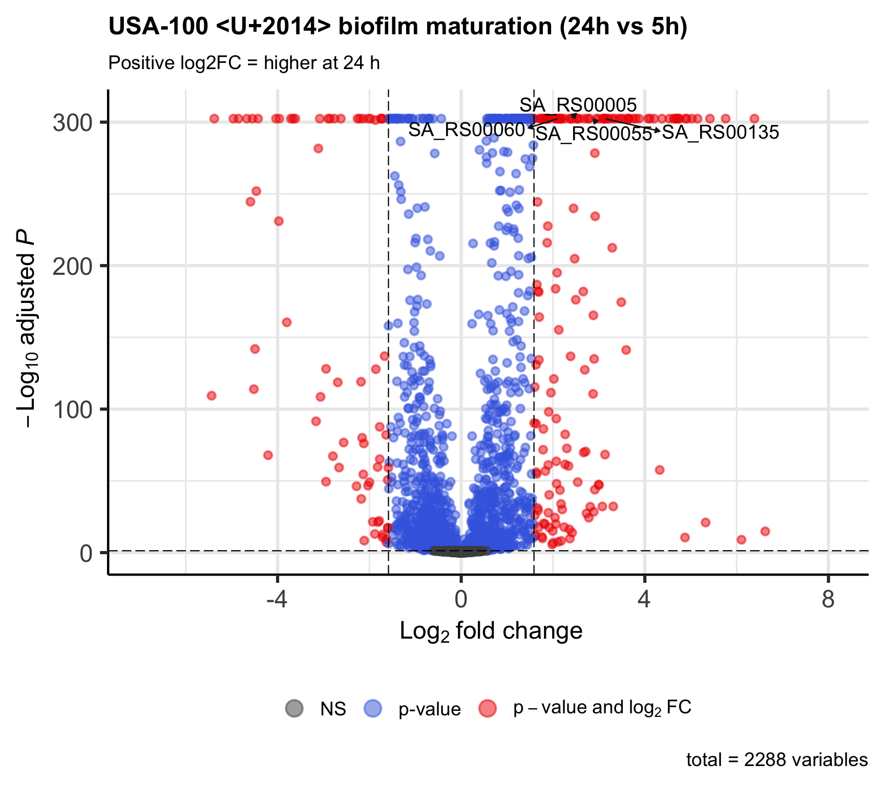
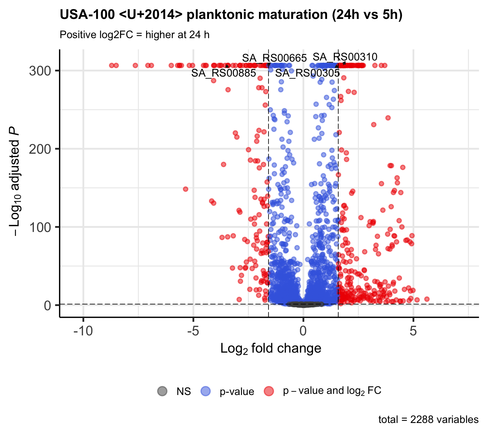
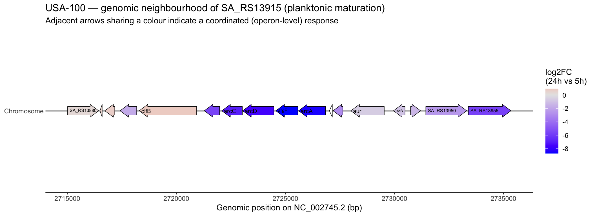

Part 1 — Maturation: How a Culture Changes Over Time
Here we compare the last time point to the first within a single lifestyle. This isolates the effect of time (culture ageing / maturation) with lifestyle held constant, so nothing here is confounded by the biofilm-vs-planktonic difference.
📘 Note — first vs last, and an invitation to explore. We compare 24 h vs 5 h
(last vs first). This is the largest maturation window and the clearest teaching contrast. The dataset also
has a 10 h time point: you are encouraged to repeat these analyses with first_tp and
last_tp set to other pairs (e.g. 5 h vs 10 h, or 10 h vs 24 h) to see how the maturation signal
builds up over time. Nothing else in the code needs to change.
1a — Maturation within Biofilm
❓ The question we are answering
- Question: Within biofilm cultures, which genes change between 5 h and 24 h of growth?
- Contrast: Biofilm 24 h vs Biofilm 5 h. Reference = 5 h.
- A positive log2FC means: higher at 24 h (induced as the biofilm matures).
- A hit tells you: this gene is part of the biofilm maturation programme.
Code
dds_bf <- dds_all[, dds_all$lifestyle == "Biofilm" &
dds_all$timepoint %in% c(first_tp, last_tp)]
dds_bf$timepoint <- relevel(droplevels(dds_bf$timepoint), ref = first_tp)
design(dds_bf) <- ~ timepoint
dds_bf <- DESeq(dds_bf)
coef_bf <- paste0("timepoint_", last_tp, "_vs_", first_tp)
res_bf <- get_results(dds_bf, coef_bf)
cat("Samples (biofilm):\n"); print(table(dds_bf$timepoint))## Samples (biofilm):##
## 5h 24h
## 4 8##
## Coefficient: timepoint_24h_vs_5h## DEG counts (padj < 0.05 & |log2FC| > 1.585 ):##
## Up Down Not significant
## 154 70 2064Code
##
## Most extreme fold changes (check baseMean <U+2014> high = real, single digits = low-count noise):## gene_id baseMean log2FoldChange
## 1 SA_RS09290 30.2 6.62
## 2 SA_RS13430 1315.3 6.39
## 3 SA_RS00235 15.2 6.11
## 4 SA_RS08310 1021.1 5.76
## 5 SA_RS11475 91.0 -5.44
## 6 SA_RS04675 1234.2 5.42
## 7 SA_RS11470 414.7 -5.38
## 8 SA_RS10730 27.1 5.32
## 9 SA_RS08315 1211.2 5.15
## 10 SA_RS04670 1376.7 5.03
## padj
## 1 0.0000000000000016200000000000000943283115913504761495884980626244753487696925731142982840538024902343750000000000
## 2 0.0000000000000000000000000000000000000000000000000000000000000000000000000000000000000000000000000000000000000000
## 3 0.0000000010500000000000000964149440014073870475197480800488847307860851287841796875000000000000000000000000000000
## 4 0.0000000000000000000000000000000000000000000000000000000000000000000000000000000000000000000000000000000000000000
## 5 0.0000000000000000000000000000000000000000000000000000000000000000000000000000000000000000000000000000000000000452
## 6 0.0000000000000000000000000000000000000000000000000000000000000000000000000000000000000000000000000000000000000000
## 7 0.0000000000000000000000000000000000000000000000000000000000000000000000000000000000000000000000000000000000000000
## 8 0.0000000000000000000010500000000000000627815565511222910503146002994847194780944545783318844200948660727590322495
## 9 0.0000000000000000000000000000000000000000000000000000000000000000000000000000000000000000000000000000000000000000
## 10 0.0000000000000000000000000000000000000000000000000000000000000000000000000000000000000000000000000000000000000000
## direction
## 1 Up
## 2 Up
## 3 Up
## 4 Up
## 5 Down
## 6 Up
## 7 Down
## 8 Up
## 9 Up
## 10 UpCode

Interpretation: a substantial set of genes changes as the biofilm matures from 5 h to 24 h, split between genes induced and repressed with age. This is the biofilm’s own developmental programme, measured without any reference to the planktonic state.
1b — Maturation within Planktonic
❓ The question we are answering
- Question: Within planktonic cultures, which genes change between 5 h and 24 h of growth?
- Contrast: Planktonic 24 h vs Planktonic 5 h. Reference = 5 h.
- A positive log2FC means: higher at 24 h.
- A hit tells you: this gene responds to culture ageing in planktonic cells (largely the entry into stationary phase).
Code
dds_pk <- dds_all[, dds_all$lifestyle == "Planktonic" &
dds_all$timepoint %in% c(first_tp, last_tp)]
dds_pk$timepoint <- relevel(droplevels(dds_pk$timepoint), ref = first_tp)
design(dds_pk) <- ~ timepoint
dds_pk <- DESeq(dds_pk)
coef_pk <- paste0("timepoint_", last_tp, "_vs_", first_tp)
res_pk <- get_results(dds_pk, coef_pk)
cat("Samples (planktonic):\n"); print(table(dds_pk$timepoint))## Samples (planktonic):##
## 5h 24h
## 4 8##
## Coefficient: timepoint_24h_vs_5h## DEG counts (padj < 0.05 & |log2FC| > 1.585 ):##
## Up Down Not significant
## 277 146 1865Code
##
## Most extreme fold changes (check baseMean <U+2014> high = real, single digits = low-count noise):## gene_id baseMean log2FoldChange padj direction
## 1 SA_RS13915 2187.0 -8.71 0.0000000000 Down
## 2 SA_RS13920 3446.2 -8.51 0.0000000000 Down
## 3 SA_RS13910 4402.2 -7.64 0.0000000000 Down
## 4 SA_RS13960 4151.5 -7.07 0.0000000000 Down
## 5 SA_RS13905 9346.5 -6.91 0.0000000000 Down
## 6 SA_RS07205 977.4 -6.00 0.0000000000 Down
## 7 SA_RS13955 5645.7 -5.72 0.0000000000 Down
## 8 SA_RS07200 858.5 -5.63 0.0000000000 Down
## 9 SA_RS13900 772.4 -5.63 0.0000000000 Down
## 10 SA_RS00035 13.3 5.61 0.0000000212 UpCode

Interpretation: planktonic cultures typically show an even larger maturation response than biofilm over the same window. This is expected: planktonic cells exhaust their medium and enter stationary phase between 5 h and 24 h, a dramatic physiological transition that remodels a large part of the transcriptome.
📘 Look closely at the most extreme genes — a biology lesson hiding in a sanity check. The
diagnostic table above was meant only to confirm that big fold changes come from well-expressed genes (they
do — base means in the hundreds to thousands). But look at the gene IDs of the strongest planktonic
hits: several are consecutive locus tags (e.g. a run of neighbouring SA_RS139xx
genes), all changing strongly in the same direction, all highly expressed. In bacteria,
consecutive genes transcribed together usually form an operon — a group of genes controlled
as a single unit. Seeing a whole run of adjacent genes coordinately switched off is the transcriptional
signature of an operon being shut down as the culture ages.
Challenge: look up a few of these SA_RS139xx locus tags (e.g. on NCBI Gene or
in the reference annotation). What do they encode? A coordinated shutdown of highly-expressed adjacent genes
at 24 h is a classic sign of the cell reducing a major energy-expensive process as it enters stationary
phase — which functional category would you expect, and does it match the “dormancy” biology described in
the paper?
💡 Tip — visualising operons in R. Genes along a chromosome can be drawn as arrows with the
gggenes package (a ggplot extension), coloured by fold change to show a coordinated operon
response at a glance. This needs each gene’s genomic start/end/strand, which come from the reference
annotation (GTF/GFF) rather than the count matrix. If those coordinates are available in the analysis object,
the section below draws the neighbourhood of the top hit automatically.
Visualising the Operon: Genes as Arrows Along the Chromosome
To see the coordinated shutdown directly, we read the gene coordinates from the reference GTF, take a window of genes centred on the strongest planktonic maturation hit, and draw them as arrows coloured by their fold change. A block of adjacent arrows all the same colour is the visual signature of an operon responding as a unit.
Code
# A GTF is a tab-delimited text file, so we read it directly with readr — no
# specialised genomics package is needed. We keep only the "gene" feature rows,
# then pull the fields we want out of the free-text attributes column with regex.
gtf_raw <- readr::read_tsv(
gtf_path,
comment = "#",
col_names = c("seqname", "source", "feature", "start", "end",
"score", "strand", "frame", "attribute"),
col_types = "ccciicccc",
progress = FALSE
) %>%
filter(feature == "gene")
# Helper: pull the value of a named attribute (e.g. gene_id "SA_RS00145";)
extract_attr <- function(x, key) {
m <- stringr::str_match(x, paste0(key, ' "([^"]*)"'))
m[, 2]
}
coords <- gtf_raw %>%
mutate(
gene_id = extract_attr(attribute, "gene_id"),
gene_name = extract_attr(attribute, "gene"), # real symbol if present
locus_tag = extract_attr(attribute, "locus_tag")
) %>%
mutate(gene_name = ifelse(is.na(gene_name) | gene_name == "", gene_id, gene_name)) %>%
select(gene_id, gene_name, locus_tag, seqname, start, end, strand) %>%
filter(!is.na(gene_id)) %>%
distinct(gene_id, .keep_all = TRUE)
cat("Genes with coordinates parsed from GTF:", nrow(coords), "\n")## Genes with coordinates parsed from GTF: 2816Code
## Genes in results also found in GTF : 2288 of 2288## # A tibble: 3 x 7
## gene_id gene_name locus_tag seqname start end strand
## <chr> <chr> <chr> <chr> <int> <int> <chr>
## 1 SA_RS00145 dnaA SA_RS00145 NC_002745.2 517 1878 +
## 2 SA_RS00150 dnaN SA_RS00150 NC_002745.2 2156 3289 +
## 3 SA_RS00155 yaaA SA_RS00155 NC_002745.2 3670 3915 +📘 Note: We match the DE results to the GTF by gene_id (the locus tag). This GTF
also carries a gene attribute with the real gene symbol (e.g. dnaA), which we use for
nicer labels when available and fall back to the locus tag otherwise. If the number matched were much lower
than the number of genes, the identifier styles would differ between the count matrix and the GTF — here they
are the same locus tags, so the match should be nearly complete.
Code
# --- Settings you can change --------------------------------------------------
window_genes <- 8 # how many genes to show on each side of the central hit
# -----------------------------------------------------------------------------
# 1. Pick the central gene: the strongest planktonic maturation hit that has coordinates
central_gene <- res_pk %>%
filter(direction != "Not significant", gene_id %in% coords$gene_id) %>%
arrange(padj, desc(abs(log2FoldChange))) %>%
slice_head(n = 1) %>%
pull(gene_id)
# 2. Order genes by genomic position on that contig and take a window around it
central_row <- coords %>% filter(gene_id == central_gene)
region <- coords %>%
filter(seqname == central_row$seqname) %>%
arrange(start) %>%
mutate(idx = row_number())
central_idx <- region$idx[region$gene_id == central_gene]
lo <- max(1, central_idx - window_genes)
hi <- min(nrow(region), central_idx + window_genes)
region_window <- region %>%
filter(idx >= lo, idx <= hi) %>%
left_join(res_pk %>% select(gene_id, log2FoldChange, padj), by = "gene_id") %>%
mutate(is_center = gene_id == central_gene)
cat("Central gene:", central_gene,
"| contig:", central_row$seqname,
"| window:", nrow(region_window), "genes\n")## Central gene: SA_RS13915 | contig: NC_002745.2 | window: 17 genesCode
# 3. Draw. We give gggenes the true start/end plus a 'forward' flag for strand,
# and let it draw the arrowhead direction. Assign then print() so the plot
# always renders inside the chunk.
operon_plot <- ggplot(
region_window,
aes(xmin = start, xmax = end, y = "Chromosome",
fill = log2FoldChange, forward = (strand == "+"))
) +
geom_gene_arrow(arrowhead_height = grid::unit(6, "mm"),
arrow_body_height = grid::unit(4, "mm")) +
geom_gene_label(aes(label = gene_name), align = "left", min.size = 3) +
scale_fill_gradient2(low = "blue", mid = "grey90", high = "red",
midpoint = 0, name = "log2FC\n(24h vs 5h)",
na.value = "white") +
theme_genes() +
theme(axis.title.y = element_blank(), legend.position = "right") +
labs(
x = paste0("Genomic position on ", central_row$seqname, " (bp)"),
title = paste0(strain, " — genomic neighbourhood of ", central_gene,
" (planktonic maturation)"),
subtitle = "Adjacent arrows sharing a colour indicate a coordinated (operon-level) response"
)
print(operon_plot)
Code
💡 Tip: Increase or decrease window_genes to widen or narrow the region shown.
Genes coloured white have no fold-change value (they were filtered out in QC for low counts, or are not in the
results). A run of same-coloured arrows flanked by grey/white neighbours is a strong hint that you are looking
at a single transcriptional unit.
- Co-location — the strongly-coloured genes are immediate neighbours on the chromosome, with no unrelated genes breaking up the block.
- Co-orientation — the arrows all point the same way (same strand), which is required for genes to be transcribed together into one mRNA.
- Co-regulation — they all change by a similar, large amount in the same direction (here a coordinated shutdown of roughly 7–8 log2 units in planktonic cells by 24 h).
Challenge: read the gene symbols on the coloured arrows and look a few of them up (NCBI Gene, or the reference annotation). You should find they belong to a single, named metabolic pathway. Which pathway is it, what does it let the cell do, and why would that pathway be switched off as a planktonic culture ages into stationary phase? Relate your answer to the “dormancy / metabolic slow-down” biology the paper describes.
A note on rigour: co-location + co-orientation + co-regulation make a very strong inference that these genes form an operon, but strictly, “operon” means transcription from a single promoter into one mRNA — proving that needs operon-mapping evidence (e.g. transcript read-through across gene boundaries) or prior literature. For well-studied organisms like S. aureus, the identity of the block can be confirmed directly against the published literature.
Comparing the Two Maturation Programmes
The two lists answer “what changes with time” in each lifestyle. Overlapping genes change with age regardless of lifestyle (general ageing / stationary-phase response); genes unique to one list are the lifestyle-specific part of maturation.
Code
sig_bf <- res_bf %>% filter(direction != "Not significant") %>% pull(gene_id)
sig_pk <- res_pk %>% filter(direction != "Not significant") %>% pull(gene_id)
overlap_tbl <- tibble(
set = c("Biofilm only", "Planktonic only", "Shared", "Biofilm total", "Planktonic total"),
n = c(length(setdiff(sig_bf, sig_pk)),
length(setdiff(sig_pk, sig_bf)),
length(intersect(sig_bf, sig_pk)),
length(sig_bf),
length(sig_pk))
)
kable(overlap_tbl, caption = "Maturation DEGs: overlap between lifestyles") %>%
kable_styling(bootstrap_options = c("striped", "hover"), full_width = FALSE)| set | n |
|---|---|
| Biofilm only | 117 |
| Planktonic only | 316 |
| Shared | 107 |
| Biofilm total | 224 |
| Planktonic total | 423 |
📘 Note: A large “Shared” set is expected — both cultures age over the same 5 h → 24 h window and share the general stationary-phase / growth-slowdown response. The lifestyle-specific genes (in only one column) are often the more biologically interesting part of maturation.